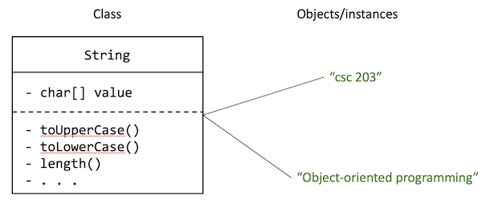

In this lecture we will get a first look at Classes and objects in Java. Following this we’ll look at some classes that are available in the Java standard library, specifically Lists and Maps.
- Objects and classes
- A code example
- Encapsulation, or information hiding
- Using existing classes in Java
- Maps
Objects and classes
A class is the blueprint that defines data each object has and what behaviours it can perform. You can create many individual objects using the same class. These objects are called instances of the class.
Objects are “boxes” of related pieces of data and behaviours that use those bits of data.
For example, consider the String class in Java.
If you follow that link, you’ll see a lot of comments and other things that will look unfamiliar (at least for these first few weeks).
But fundamentally, the String class defines the following
- All
Strings have an array of characters (data). - All
Strings have a bunch of actions they can perform using that array of characters (behaviours). For example, they can turn the characters to upper case or lower case, search the array for a specific sub-string of characters, or remove and replace specific characters with other ones.
The String class, by defining the data and behaviours like the above, allows us to create String objects, each of which has its own array of characters, and its own behaviours it can perform using its array of characters.
In the figure below, the (super-simplified) String class defines the data (value) and behaviours that all Strings should have.
Then we used that class to create two instances of String, i.e., two objects.
Each of those objects have their own bit of data called value (in this case, an array of characters), and can perform actions using that value.

See the example in code:
String firstString = "csc 203";
String secondString = "Object-oriented Programming";
The two variables firstString and secondString are both made out of the same String class, but they are two different objects, i.e., two distinct instances of the String class.
Instance methods
We can tell the objects to perform certain actions. This can be done by using the dot operator (.) and saying the name of the action we want to take.
String firstString = "csc 203";
String secondString = "Object-oriented Programming";
String firstUpperCased = firstString.toUpperCase();
After the code above runs, the firstUpperCased variable will have the value "CSC 203", because the toUpperCase action gives back the value of the String with its characters in upper-case.
These actions can each object can perform are called instance methods.
Instance methods act on particular objects, or instances of the class.
Notice that the expression firstString.toUpperCase() is totally unaffected by the value of secondString.
Hence the name.
What do you think would be the value of the following expressions?
secondString.toUpperCase()firstString.toUpperCase().toLowerCase()
A code example
Consider the following class definition. It defines a class that holds data representing a cohort of CS students, and some behaviours that each cohort object can perform using its own data.
Take some time to study the code below and its accompanying annotations.
Encapsulation, or information hiding
Consider the getYear, setYear, getEnrolled, getRetainedPercent, setRetainedPercent methods above.
They don’t do much beyond getting or setting the values of the appropriate variables.
These are called getter methods (or accessors) and setter methods (or mutators).
Because they are marked as public methods, they are visible to other classes, which means other classes can get or set the cohort’s year and so on.
This should raise the question: why did we make the year (and other instance variables) private if we were going to expose access to those variables via public instance methods?
The answer is encapsulation. When we make our instance variables private, we hide them from the outside world. We gain the following benefits:
- We can prevent mutations for some variables. For example, notice that
enrolleddoes not have a setter method. We simply do not allow other classes to ever modify theenrolledvalue, which we could not have done if it waspublic. - We can control mutations for some variables. In the
setRetainedPercentmethod, we are able to perform some validity checks before accepting a new value for the retained percent. Specifically, because this is a percentage, we check that the input value is within the range 0–1. - Finally, we decouple our class from other classes. By hiding these bits of information (as opposed to giving unfettered access to the internals of how our
CsCohortworks), we reduce the potential for coupling between ourCsCohortclass and other classes in our program.
What’s coupling? If classes are tightly coupled, they have to change together. Each time one of the classes changes, it will force changes in other classes to accommodate the changes in the first class. When classes are loosely coupled, they are mostly independent. This does not mean they don’t work together to make things happen; it just means that internals of the either of the classes can change without the other ever knowing about it.
Encapsulation helps with this. By defaulting to making our instance variables private, we get a lot more control over the functionality that CsCohort presents to other classes.
Using existing classes in Java
Using the class that we just created
We can create new instances of the CsCohort class like so:
CsCohort year1 = new CsCohort(2012, 132, .932);
CsCohort year2 = new CsCohort(2013, 172, .924);
CsCohort year3 = new CsCohort(2014, 157, .936);
CsCohort year4 = new CsCohort(2015, 172, .977);
Each of the variables above points to a different object. Each object has its own data and its own behaviours that operate on that data.
Remember the Java memory model.
Each of those CsCohort variables (year1, year2, year3, year4) are pointing to the objects sitting somewhere else in memory.
Using other existing classes: Lists
Now that we know what classes, objects, and instance methods are, let’s look at some existing classes that are provided by the Java standard library.
We have already seen one super commonly used class: the String class, which can reasonably be thought of as a data structure whose job it is to store and manipulate sequences of characters.
In the rest of this lesson, we’ll talk about other data structures, specifically lists and maps.
Lists
To talk about lists, we first need to talk about arrays.
Recall from the first lesson that arrays are the most basic type of collection in Java. Its key difference from the lists you might be used to from Python is that arrays have fixed sizes and fixed types.
The fixed type is due to Java’s static type system and fondness for (some degree of) type safety. That won’t change.
However, we often do not know upfront how big we’re going to need a sequence of data to be. Arrays can be limiting in that regard.
So the Java standard library provides a couple of list implementations that we can use.
ArrayLists
The ArrayList class is provided in the Java Standard library. It is, essentially, a resizable array implementation. This means you can dynamically grow and shrink the size of the list by adding items to it or removing items from it.
See the CompareCohorts class above for examples about how to create and use ArrayLists.
Why would we want to use an ArrayList instead of a regular old array? Easy. Its size can be dynamically changed, which makes it much more flexible.
How does it work? An ArrayList works by keeping track of an array behind the scenes. We call this the backing array. So suppose we declare and initialize an empty ArrayList.
According to the documentation, Java by default creates a backing array of size 10, even though we haven’t added anything to the list as yet.
For example, we declare the ArrayList:
ArrayList<String> list = new ArrayList<>();
And this is our backing array to begin with:
Suppose we add ten items to the list.
for (int i = 0: i < 10; i++) {
list.add(i);
}
Our list’s backing array now looks like this:
| 0 | 1 | 2 | 3 | 4 | 5 | 6 | 7 | 8 | 9 |
What happens when we add an 11th item? In a regular array, that wouldn’t be possible. But an ArrayList allows us to do this. Here’s how.
When the backing array becomes full, the ArrayList does the following:
- It creates a new backing array that’s double the size of the previous one.
- It transfers all the existing content from the old backing array into the new backing array.
- It then adds the new item that we tried to add, that triggered this process in the first place.
The backing array is full, and we want to add the number 10 to the ArrayList.
| 0 | 1 | 2 | 3 | 4 | 5 | 6 | 7 | 8 | 9 |
We create a new backing array that’s double the size of the old one.
We copy the old contents into the new backing array.
| 0 | 1 | 2 | 3 | 4 | 5 | 6 | 7 | 8 | 9 |
Finally, we add the newest bit of data to the backing array.
| 0 | 1 | 2 | 3 | 4 | 5 | 6 | 7 | 8 | 9 | 10 |
The ArrayList abstracts away all of these gory details, allowing us to deal with the list as simply a dynamically sizeable linear sequence of data.
Because the backing data structure is an array, the ArrayList lets us access any arbitrary item in the list in constant time (\(\theta(1)\)), i.e., it takes the same amount of time no matter how large the list is.
However, this comes with a cost: removing or adding items to the list can take linear time (\(\theta(n)\)) in the worst case, because all items in the backing might need to be shifted left (after removals) or right (before additions).
LinkedLists
The other type of list that Java provides is the LinkedList. We won’t belabour the point here, since you likely studied LinkedLists in the previous class.
Unlike the ArrayList, the LinkedList is made up of a sequence of objects connected (“linked”) by pointers.
Each item points to the next item, forming a chain of items, i.e., the linked list.
The LinkedList is used very similarly:
LinkedList<String> list = new LinkedList<>();
It even has mostly the same methods as the ArrayList:
- You can append items to the end of the list using
add. - You can remove items from specified locations using
remove(i)(whereiis an index number). - You can get the
sizeof the list, i.e., the number of items in the list. - You can check if the list contains an item using the
containsmethod. - You can check if the list is empty by using the
isEmptymethod.
So when should you use one vs. the other? Each one is better for certain kinds of tasks. The table below shows their time complexities in the worst case for various tasks.
| Operation | ArrayList |
LinkedList |
|---|---|---|
| Random access | \(\theta(1)\) | \(\theta(n)\) |
| Add to end (append) | \(\theta(n)\) | \(\theta(1)\) |
| Add to arbitrary position | \(\theta(n)\) | \(\theta(n)\) to get to the position \(\theta(1)\) to add the item |
| Remove (from a given position) | \(\theta(1)\) to get to the position \(\theta(n)\) to remove the item and shift items in the list as appropriate |
\(\theta(n)\) to get to the position \(\theta(1)\) to perform the removal |
| Contains | \(\theta(n)\) | \(\theta(n)\) |
A note about “boxed” primitive types
Creating an ArrayList of integers or floating point values looks like this:
ArrayList<Integer> intList = new ArrayList<>();
What’s up the the Integer in the code above? Wasn’t the primitive integer type in Java called int?
In Java, all the primitive types have “boxed” versions of those types. I.e., versions in which they masquerade as reference types. That is, you will sometimes see:
shortreferred to asShortintreferred to asIntegerlongreferred to asLongdoublereferred to asDoublefloatreferred to asFloatcharreferred to asCharacterbooleanreferred to asBooleanbytereferred to asByte
Virtually the only use of these “boxed” type names is in data structures like the ArrayList or LinkedList.1
But, since they exist, they also hold some useful utility functions for doing things like parsing Strings into ints, etc.
For example, see some of these on the documentation page for Integer.
So, while code like the following will compile successfully, you will get warnings telling you to use the primitive versions of those type names.
// Do this
int num = 23;
// Not these
int num1 = new Integer(23);
Integer num2 = new Integer(23);
Integer num3 = 23;
Maps
Next, we consider maps. A map in Java is an object that maps keys to values. Each key can map to at most one value, i.e., each key must be unique.
The map is not unlike the dict structure you may be used to in Python.
The commonly used map implementation in Java is the HashMap.
The HashMap creates a pairing from keys to values, and allows fast (constant time) access to values, provided you have the key.
This is useful when you need to quickly access individual records in a very large dataset.
For example, suppose you have a HashMap where the keys are social security numbers (long) and the values are Person objects (assuming we, at some point, created a Person class).
You can initialise the map like so (notice the use of the “boxed” form of Long below):
HashMap<Long, Person> mapOfPeople = new HashMap<>();
You add records into a map using the put method.
mapOfPeople.put(123456789, new Person("Joe", "Bro"));
mapOfPeople.put(987654321, new Person("Pooja", "Ahuja"));
Assuming you have the key, you can get the value from map using the get method. If the key does not exist in the map, you will get null in return.
mapOfPeople.get(123456789); // will return Joe Bro
mapOfPeople.get(987654321); // will return Pooja Ahuja
mapOfPeople.get(192837465); // will return null,
If you try to re-enter the same key, the map will replace whatever was there previously with the new item.
mapOfPeople.put(123456789, new Person("Joe", "Bro"));
mapOfPeople.put(987654321, new Person("Pooja", "Ahuja"));
// Adding using a duplicate key
mapOfPeople.put(123456789, new Person("Cody", "Coderson")); // Joe Bro is now replaced by Cody Coderson
The HashMap provides the following functionality:
put(key, value)get(key)getOrDefault(key, default)— returns the specifieddefaultvalue instead ofnullif thekeyis not in the mapentrySet()— obtains the entire set of entries from the map; this is useful if you need to do things like loop over all the map entriesisEmpty— checks if the map is emptycontainsKey(key)— checks if the map contains the specifiedkey
All of the concepts in this section are demonstrated in the CompareCohorts class below:
-
Or, more generally, in Generic types, which we will get to later this quarter. That is also when we’ll talk about why these exist. ↩